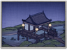

Requires
- Buildings: 
Enables
- Buildings:

Basic Building Statistics (can be modified by difficulty level, arts, skills, traits and retainers)
- Cost: 1600
- +3 to provincial happiness
- +200 to wealth from commerce in this province
- Enables recruitment of Rank 1 ninja
Clan Effects
- Each stealth chain building enables you to sustain one additional ninja (to a maximum of 5)
Description
"An eight. A nine. And… a three!"
The chance to gamble, with some small chance of winning, is a good way to keep people occupied and happy. The gambling hall helps to improve a province's wealth and, additionally, attracts ninjas looking to sell their skills to the highest bidder. There is always a darker side to something that is, after all, less than entirely respectable. Social standing was of utmost importance in feudal Japan. The gentry and warriors were at the top of the system, peasants below them, followed by artisans and merchants. There were, however, groups even lower than merchants, outcastes who did not even belong to society. These people included burakumin, the hinin, and the bakuto. The burakumin had jobs that were held to be taboo, such as undertakers and tanners: people who worked with the dead, human and animal (although, to be fair, tanning was a disgusting process and no one who had any sense of smell could stand being anywhere near). Hinin were almost non-human, defined as such by their actions: criminals and those such as actors and entertainers. The bakuto were gamblers, who did not earn an honest living. This did not stop them becoming rich and relatively powerful, although without status.